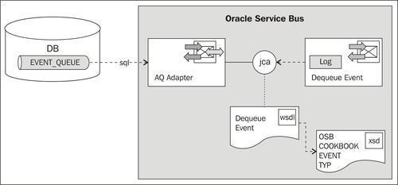
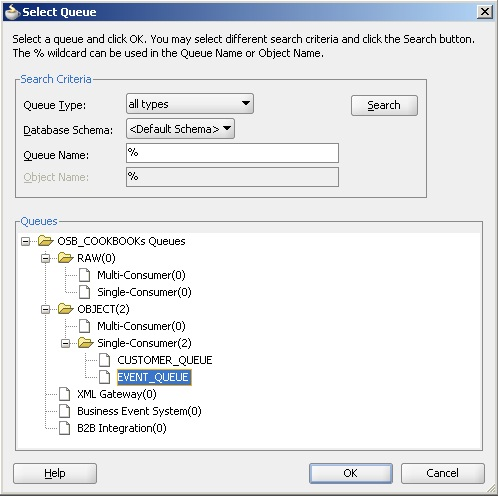
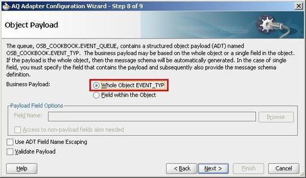
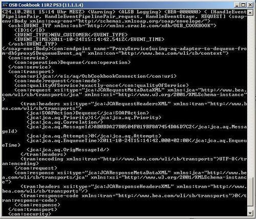
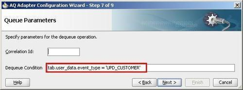

In this recipe, we will configure an inbound AQ adapter, so that it can be used to consume messages from a queue implemented in the database by Oracle AQ. The adapter will be used from a proxy service as shown in the following screenshot:

The queue EVENT_QUEUE that we will use has been set up with the OSB Cookbook standard environment using the following SQL and PL/SQL code:
--creating the object type, which defines payload CREATE OR REPLACE TYPE event_typ as OBJECT ( id NUMBER(19) , event_type VARCHAR2(30) , event_time TIMESTAMP ) -- creating queue table BEGIN sys.dbms_aqadm.create_queue_table( queue_table => 'EVENT_QUEUE_T', queue_payload_type => 'OSB_COOKBOOK.EVENT_TYP', sort_list => 'ENQ_TIME', compatible => '10.0.0', primary_instance => 0, secondary_instance => 0, storage_clause => 'tablespace USERS pctfree 10 initrans 1 maxtrans 255 storage ( initial 64K minextents 1 maxextents unlimited )'); END; / -- creating queue BEGIN sys.dbms_aqadm.create_queue( queue_name => 'EVENT_QUEUE', queue_table => 'EVENT_QUEUE_T', queue_type => sys.dbms_aqadm.normal_queue, max_retries => 5, retry_delay => 0, retention_time => 0); sys.dbms_aqadm.start_queue( queue_name => 'EVENT_QUEUE', enqueue => TRUE, dequeue => TRUE); END;
For this recipe, we will use the database queue EVENT_QUEUE available with the OSB Cookbook standard environment. Make sure that a connection factory is set up for the AQ adapter configuration, as shown in the Introduction of this chapter.
You can import the OSB project containing the base setup for this recipe into Eclipse from \chapter-7\getting-ready\using-aq-adapter-to-dequeue-from-db.
First we create the AQ adapter, which will implement the dequeue functionality from the database. In JDeveloper perform, the following steps:
composite.xml of the project DequeueFromDB. DequeueEvent in the Service Name field and click on Next. Dequeue for the Operation Name field.

The definition of the AQ adapter for consuming messages from the EVENT_QUEUE is now ready. The work in JDeveloper is done by that and we can switch to Eclipse OEPE and perform the following steps to create a proxy service using the AQ adapter:
DequeueEvent_aq.jca file and select Oracle Service Bus | Generate Service from the context menu. proxy folder for the location of the proxy service.We now have a proxy service in place that uses the AQ adapter through the JCA transport. The interface of the proxy is defined by the DequeueEvent WSDL, which has been generated by the AQ adapter. Perform the following steps in Eclipse OEPE for implementing the message flow of the proxy:
HandleEventPipelinePair. HandleEventStage. $body, $inbound into the Expression field, to log both the content of the body as well as the content of the inbound metadata.DECLARE enqueue_options dbms_aq.enqueue_options_t; message_properties dbms_aq.message_properties_t; msgid RAW(100); event event_typ; BEGIN event := event_typ(1, 'NEW_CUSTOMER', CURRENT_TIMESTAMP); dbms_aq.enqueue(queue_name => 'EVENT_QUEUE' , enqueue_options => enqueue_options , message_properties => message_properties , payload => event , msgid => msgid); END; / COMMIT;
The log statement showing the payload of the received message should be shown in the Service Bus Console window.

Using the AQ adapter allows us to implement a proxy service, which is automatically invoked when a message arrives in the queue on the database, implemented by using Oracle AQ.
Based on the object type payload defined on the database when creating the AQ queue, the AQ adapter is generating the corresponding XML schema. This schema is then used to define the WSDL for the DequeueEvent proxy service. When using the AQ adapter configuration to generate a proxy service, the proxy service will automatically get a WSDL-based interface, based on the generated WSDL of the JCA adapter. Therefore, the body variable will contain a message according to the XML schema generated by the AQ adapter.
Using the AQ adapter , we can offer an alternative way of processing events from the database. In the recipe, Using DB adapter to poll for changes on a database table, we have seen that the DB adapter can be used to poll for changes in a table.
Using this recipe and the AQ adapter, the same can be achieved in a more event-driven fashion, where a database trigger would be used on a table to enqueue a message into the EVENT_QUEUE whenever a change is applied to a database table.
Dequeuing of the message works in a transaction and can be combined with another modification on another transactional resource (such as a database table or JMS queue) by using an XA transaction.
If we only want to consume messages which meet a specific condition, then the Dequeue Condition on the Queue Adapter screen of the AQ adapter wizard can be used.
The Dequeue Condition is a Boolean expression using a syntax similar to the WHERE clause of a SQL query, but without using the WHERE keyword. The expression can include conditions on message properties, user object payload data, and PL/SQL or SQL functions. Message properties include the columns of the queue table, such as priority and corrid.
If the Dequeue Condition is specified and no messages meet the condition, then no dequeue will happen.
To specify a Dequeue Condition on a message payload (object payload), use attributes of the object type in the clause. Each attribute must be prefixed with tab.user_data as a qualifier to indicate the specific column of the queue table that stores the payload.
The following screenshot shows a possible restriction on the recipe, so that only messages with event_type equals to UPD_CUSTOMER are consumed:
